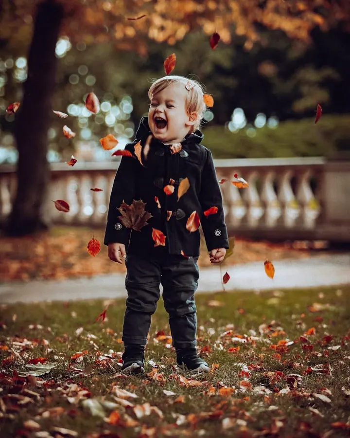
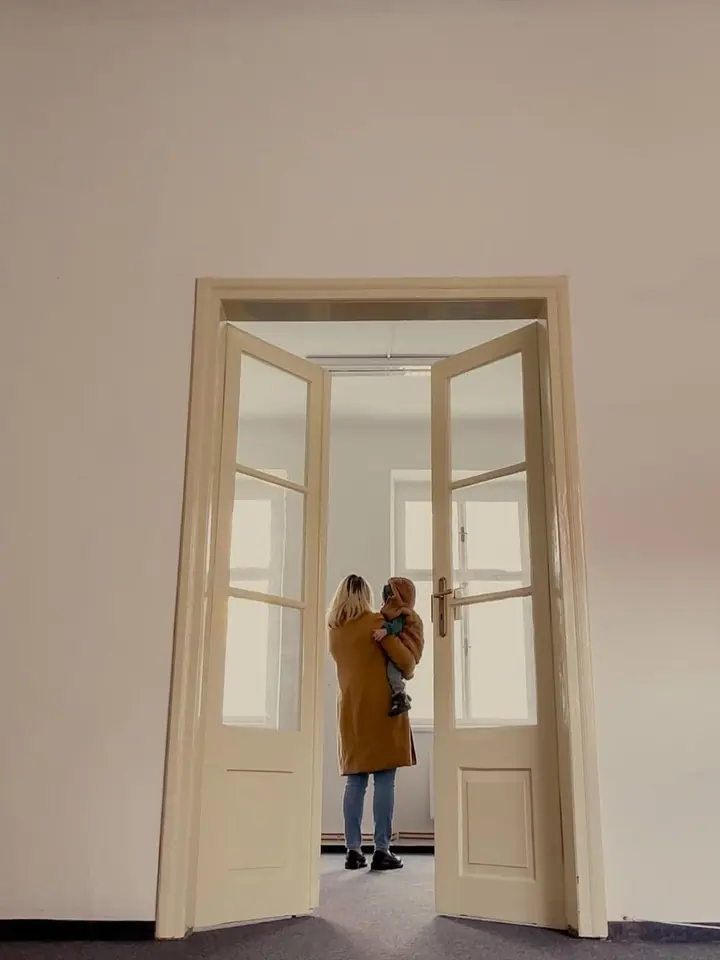
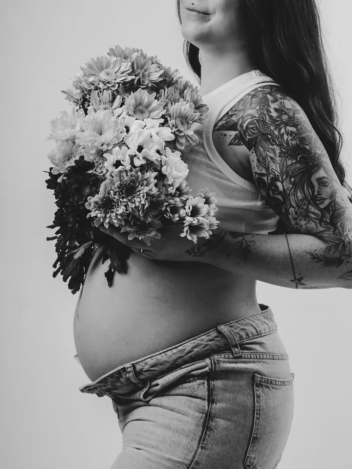

Těhotenství
Velké období změn a očekávání, zachycené v ateliéru nebo venku. Těhotenské focení se dá krásně spojit s pozdějším focením miminka.

Jmenuji se Martina Valíčková a fotografii se věnuji od roku 2008. Ve svém ateliéru v Písku fotím maminky v očekávání, miminka, děti a celé rodiny a ráda vás doprovodím i…
Rezervovat termínFotografii se věnuji od roku 2008 a za ta léta jsem zachytila tisíce příběhů napříč žánry. Dříve jsem fotila ve Fotoateliéru Vedralová, teď mě čeká nová kapitola.


Tou kapitolou je Písek, město, kde jsem studovala filmovou režii a kde dnes žiju s rodinou. Otevřela jsem tu svůj Fotoateliér Valíčková na Heydukově ulici a kulisy do něj si často vyrábím sama, třeba pohádkový les pro malé princezny a prince.
Věřím, že nejkrásnější fotografie vznikají v pohodové a přátelské atmosféře s ohledem na vás. Fotím v ateliéru i venku v přírodě, v Písku i v Praze.
Co fotím
Velké období změn a očekávání, zachycené v ateliéru nebo venku. Těhotenské focení se dá krásně spojit s pozdějším focením miminka.
Glamour, rodinné portréty i profesní fotografie. Rodiny fotím přirozeně, v ateliéru s kulisami nebo venku v přírodě.
Váš velký den zachycený v každém detailu, přirozeně a bez zbytečného stresu. Nečeká vás dlouhé focení po obřadu ani nekonečné pózování.
První křehké dny miminka v klidu ateliéru. Focení probíhá ideálně do 14 dní od narození.
Postup
Napište mi, zavolejte, nebo si termín zarezervujte rovnou online přes rezervační systém.
Společně probereme, co si od focení slibujete, jestli budeme fotit v ateliéru, venku, nebo obojí, a vybereme vhodný balíček.
Focení probíhá v klidu a bez spěchu. Postarám se o pohodovou atmosféru, ve které se uvolní i ti, kdo se fotit moc neradi.
Upravené fotografie dostanete v online galerii. Součástí balíčků je i tisk, u svateb fotokniha s pevnou vazbou nebo tisk.
Otázky
Ideálně do 14 dní od narození, kdy miminko ještě hodně spí a dá se krásně fotit. Termín je dobré rezervovat už během těhotenství.
Portréty, newborn, těhotenské a rodinné focení začínají balíčkem MINI za 2 400 Kč (do 60 minut, 5 fotografií, online galerie a tisk 13×18 cm). Dále nabízím CLASSIC za 3 200 Kč a PREMIUM za 4 200 Kč. U rodin je příplatek 200 Kč pro až 5 osob.
Ano. Kromě ateliéru fotím i v přírodě a na venkovních lokacích, a když to čas dovolí, dá se ateliér s exteriérem spojit.
Fotím přirozeně a tak, aby focení nenarušovalo průběh dne. Balíček Základní (obřad, až 3 hodiny) stojí 8 000 Kč, Klasik (až 5 hodin včetně hostiny) 13 000 Kč a Premium (celý den až 10 hodin) 23 000 Kč.